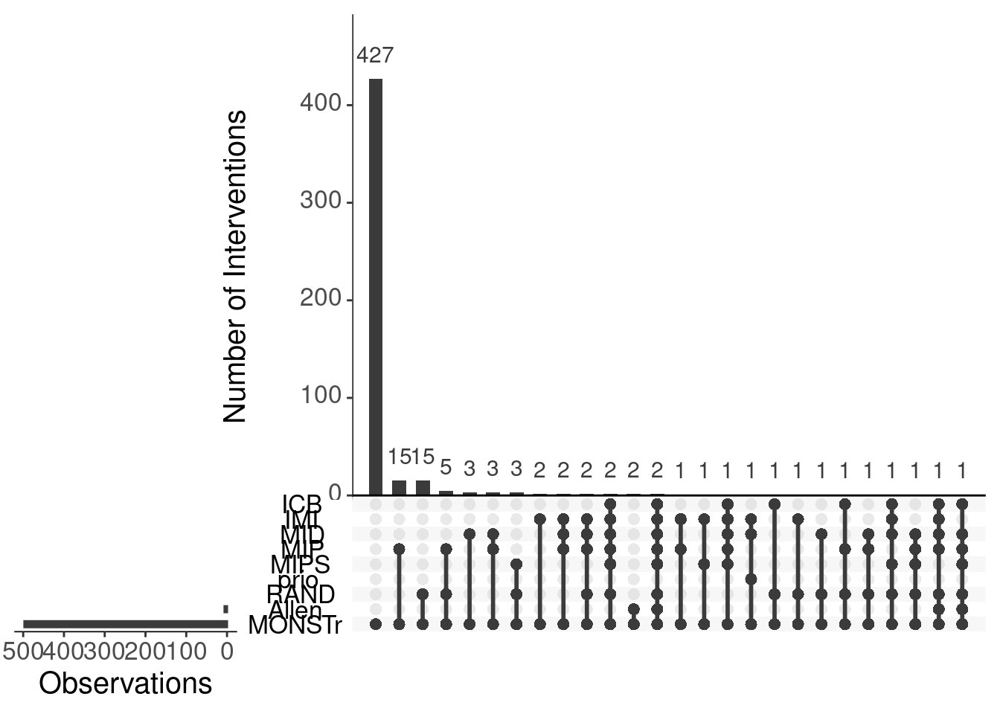

Our universe of cases is US military interventions after the Cold War.
Existing datasets
We start by identifying list of US interventions coded in existing IR datasets as well as their temporal scope. We can then compare their coverage to see what covariates may conflict and where things may be missing.
The first step will be loading each dataset and subsetting it to the appropriate actor (US as intervenor) and time period (post-Cold War).
ICB
The International Crisis Behavior (ICB) datasets concerns international crises that may or may not have escalated to war (Brecher and Wilkenfeld 1997). We filter the dataset so that it only includes the crisis in which the United States was an actor in the post-Cold War period.
Show the code
icb <- read.csv(paste0(here::here(),"/inst/extdata/icb2v12.csv")) %>%
dplyr::filter(yrtrig >= 1989 &
actor == "USA")
DT::datatable(icb)IMI
The IMI dataset includes international military interventions from 1946-2005 Kisangani and Pickering (2008). It defines interventions as “the movement of regular troops or forces (airborne, seaborne, shelling, etc) of one country inside another, in the context of some political issue or dispute”. We filter the dataset so that it only includes the crisis in which the United States was an actor in the post-Cold War period.
Show the code
imi <- read.csv(paste0(here::here(),"/inst/extdata/IMI/IMI_dataset.csv")) %>%
dplyr::filter(start >= 19890101 &
intervener == 2)
imi$start <- gsub('.{4}$', '', imi$start)
DT::datatable(imi)MIDs
The MIDs dataset covers all conflicts in which a state threatens, displays, or uses force against another state from 1816-2010 (Palmer et al. 2015). Dispute level dataset is chosen at the participant level to best identify broader disputes where the US was an actor. Disputes are inclusive of their incidents and the participant-level data allows us to subset to the US. Covariates for those disputes can later be merged from the dispute-level dataset. We filter the dataset so that it only includes the interventions in which the United States was an actor in the post-Cold War period.
Show the code
mids <- read.csv(paste0(here::here(),"/inst/extdata/MIDs/MIDs_dispute-participants.csv")) %>%
dplyr::filter(styear >= 1989 &
ccode == 2)
DT::datatable(mids)MIP
Show the code
mip <- readstata13::read.dta13(paste0(here::here(),"/inst/extdata/MIP/MIPDataKushiToft.dta")) %>%
dplyr::filter(styear >= 1989 &
RemoveCase == 0)The MIP data also covers US military interventions, broadly defined as “united instances of international conflict or potential conflict outside of normal peacetime activities in which the purposeful threat, display, or use of military force by official US government channels is explicitly directed toward the government, official representatives, official forces, property, or territory of another state actor” (kushi_introducingmilitaryintervention_2022?). This is inclusive of IMI (purposeful movement of troops inside another country), CRS (armed forces abroad outside of normal peacetime purposes), RAND RUGID (at least 100 ground troops in a year), MIPS (at least 500 military personnel), and MID (military force short of war).1
MIPS
The MIPS dataset codes Military Interventions by Powerful States from 1946-2003 (Sullivan and Koch 2009). It includes the US, China, France, and Russia using force against state and non-state targets as well as their political objects, the costs of the operation, and the interventions outcomes. We filter the dataset so that it only includes the interventions in which the United States was an actor in the post-Cold War period.
Show the code
mips <- read.csv(paste0(here::here(),"/inst/extdata/MIPS/MIPS_dataset.csv")) %>%
dplyr::filter(styr >= 1989 &
MP == 2)
DT::datatable(mips)PRIO
The PRIO dataset on armed conflict includes internal and external conflicts from 1946-2008 (Gleditsch et al. 2002). We filter the dataset so that it only includes the interventions in which the United States was an actor in the post-Cold War period.
Show the code
prio <- read.csv(paste0(here::here(),"/inst/extdata/PRIO/UCDP-PRIO_armed_conflict_dataset.csv")) %>%
dplyr::filter(year >= 1989 &
side_a_id == 3) # PRIO does not use the GW identifier. It is confirmed that this refers to the USA
DT::datatable(prio)RAND
RAND has a forthcoming dataset on US military interventions from 1898-2016 (Kavanagh et al. 2019). Because the raw data is not yet public, the list of cases is taken from their appendix and copied into a dataframe. We filter the dataset so that it only includes the interventions in the post-Cold War period.
Show the code
rand <- read.csv(paste0(here::here(),"/inst/extdata/rand_interventionlist.csv")) %>%
dplyr::filter(incident_start_year >= 1989)
DT::datatable(rand)Aerial bombing
A number of other datasets on aerial bombing analyze similar conflicts and contain variables of interest. We can make our dataset compatible with those. The next task is to make them compatible by subsetting to just US aerial bombing cases and checking the unit of analysis. We’ll start with (allen_understandingimpactair_2017?) and Horowitz and Reiter (2001).
The war ID’s only have a partial match to one another and not every cruise missile bombing has a COW code so we will have to make a new campaign variable for each dataset to merge the cases. Since the unique rows in our new dataset is smaller, we’ll change the names in the other datasets to match the equivalents in the new cruise missile data. In this case, that will be the wikidata ID. That has the advantage of being uniform since it’s an external source and can be merged using unique IDs later which will help make the data compatible with other datasets. This will allow us to then merge on the war_wikidata_name variable.
While (allen_understandingimpactair_2017?) has unique war names that correspond fairly closely with those in the cruise missile dataset, the other datasets do not so that will have to be manually added. Confirming that’s the case, we can re-name those levels to be consistent with the corresponding column in the cruise missile data.
Horowitz and Reiter (2001) build on Pape (1996)’s work to test whether air power will succeed in accomplishing foreign policy objectives by testing theories about target regime type and demand for regime change. They add more cases that represent instance of aerial bombing both after Pape’s work was published and also cases he missed. Similar to Pape (1996), they seek to explain success in aerial bombing and argue that when the target is militarily vulnerable, air power will succeed. The civilian vulnerability of the target does not matter. Air power works less well if the attacker demands that the target government step down and it does not matter if the target is democratic.
Show the code
# Prep Allen data
allen_17 <- readstata13::read.dta13(paste0(here::here(), "/inst/extdata/AllenMtzMachainAerialBombingData2016CMPS.dta")) %>%
dplyr::filter(year >= 1989 &
ccode1 == 2 &
bomb == 1) %>%
dplyr::mutate(war_wikidata_name = war) %>%
dplyr::mutate(war_wikidata_name = dplyr::recode(war_wikidata_name,
"WWI" = "World War I",
"WWII" = "World War II",
"Korean War" = "Korean War",
"Vietnam Phase 2" = "Vietnam War",
"Vietnam (163)" = "Vietnam War",
"Vietnam" = "Vietnam War",
"Vietnam Phase2" = "Vietnam War",
"Second Laotian (170)" = "Laotian Civil War",
"2nd Laotian War, ph 2" = "Laotian Civil War",
"Gulf War" = "Gulf War",
"War for Kosovo" = "Kosovo War",
"Invasion of Afghanistan" = "War in Afghanistan",
"Invasion of Iraq" = "Iraq War")) %>%
dplyr::mutate(allen = 1)
# Prep Horowitz data
horowitz_01 <- foreign::read.dta(paste0(here::here(), "/inst/extdata/jcr01.dta")) %>%
dplyr::filter(attacker %in% c('United States', 'Allies', 'U.S./Britain', 'NATO', 'US')) %>%
dplyr::mutate(date = dplyr::recode(date,
'1944-1945' = "1944",
'1942-1944' = "1942",
'Aug. 1945' = "1945",
'1965-1968' = "1965",
'1950-1951' = "1950")) %>%
dplyr::mutate(date = as.numeric(date)) %>%
dplyr::filter(date >= 1989) %>%
dplyr::mutate(war_wikidata_name = warid) %>%
dplyr::mutate(war_wikidata_name = ifelse(date == "1991", "Gulf War", war_wikidata_name),
war_wikidata_name = ifelse(date == "1996", "Iraqi Kurdish Civil War", war_wikidata_name),
war_wikidata_name = ifelse(date == "1998", "Iraqi no-fly zones", war_wikidata_name)) %>%
dplyr::mutate(horowitz = 1)
# Merge together
aerial_prior <- dplyr::full_join(allen_17, horowitz_01) %>%
dplyr::mutate(allen = ifelse(is.na(allen), 0, 1),
horowitz = ifelse(is.na(horowitz), 0, 1))
### AG pick up here by adding more mods to the aerial prior in the above section
### Attacker ccode
aerial_prior$ccode1 <- 2
### Defender ccode
aerial_prior$ccode2_merge <- countrycode::countrycode(aerial_prior$defender, "country.name", "cown")
aerial_prior$ccode2 <- ifelse(is.na(aerial_prior$ccode2), aerial_prior$ccode2_merge, aerial_prior$ccode2)
aerial_prior$ccode2_merge <- NULL
### Defender name
aerial_prior$defender2_merge <- countrycode::countrycode(aerial_prior$ccode2, "cown", "country.name")
aerial_prior$defender2 <- ifelse(is.na(aerial_prior$defender2), aerial_prior$defender2_merge, aerial_prior$defender2)
aerial_prior$defender2_merge <- NULL
aerial_prior %>%
DT::datatable()Merge
Now that we know the interventions each dataset identifies for the US post-1989, we can compare them and see what cases each one covers. Then we merge those cases to get a non-duplicated list of interventions for which we want to identify the campaigns and operations. Each dataset should have each US intervention as a unique row.
Rather than trying to manually merge each dataset to one another, the easiest method will be merging each observation from each dataset to the Q code for that event. Then we see which Q codes match up
We subset to only variables useful for Q code identification To help coders identify the ccode for each observation, we’ll want the name provided by the dataset, target country, and date.
Show the code
# ICB
## Subset to relevant columns
icb_id <- icb[ , c('yrtrig', 'crisname')]
## Standardize column names
icb_id <- icb_id %>% dplyr::rename('Year' = yrtrig,
'Intervention' = crisname)
## Create identifier column
icb_id$dataset <- 'icb'
icb_id$Intervention <- as.character(icb_id$Intervention)
# IMI
## Subset to relevant columns
imi_id <- imi[ , c('target', 'start', 'description')]
## Add country name from ccode
imi_id$target <- countrycode::countrycode(imi_id$target, "cown", "country.name")
## Standardize column names
imi_id <- imi_id %>% dplyr::rename('Target' = target,
'Intervention' = description,
'Year' = start)
## Create identifier column
imi_id$dataset <- 'imi'
imi_id$Intervention <- as.character(imi_id$Intervention)
# MIPS
## Subset to relevant columns
mips_id <- mips[ , c('location', 'intervention', 'styr')]
## Set country names so they are not numeric factors
mips_id$location <- as.character(mips_id$location)
## Standardize column names
mips_id <- mips_id %>% dplyr::rename('Target' = location,
'Intervention' = intervention,
'Year' = styr)
## Create identifier column
mips_id$dataset <- 'mips'
mips_id$Intervention <- as.character(mips_id$Intervention)
# PRIO
## Subset to relevant columns
prio_id <- prio[ , c('side_b', 'year')]
## Make clear the target name is Al-Qaeda
prio_id$side_b <- 'Al-Qaeda'
## Standardize column names
prio_id <- prio_id %>% dplyr::rename('Target' = side_b,
'Year' = year)
## Create identifier column
prio_id$dataset <- 'prio'
# MIDS
## Subset to relevant columns
mids_id <- mids[ , c('dispnum3', 'styear')]
## Standardize column names
mids_id <- mids_id %>% dplyr::rename('Intervention' = dispnum3,
'Year' = styear)
## Create identifier column
mids_id$dataset <- 'mids'
# RAND
## Subset to relevant columns
rand_id <- rand[ , c('operation_name', 'target_country', 'incident_start_year')]
## Standardize column names
rand_id <- rand_id %>% dplyr::rename('Year' = incident_start_year,
'Intervention' = operation_name,
'Target' = target_country)
## Create identifier column
rand_id$dataset <- 'rand'
rand_id$Intervention <- as.character(rand_id$Intervention)
# MIP
## Subset to relevant columns
mip_id <- mip %>%
dplyr::select(styear, Name, StateB)
## Standardize column names
mip_id <- mip_id %>%
dplyr::rename('Year' = styear,
'Intervention' = Name,
'Target' = StateB)
mip_id$dataset <- 'mip'
mip_id$Intervention <- as.character(mip_id$Intervention)
# Coerce to df
combined_id <- plyr::rbind.fill(icb_id, imi_id, mids_id, mips_id, prio_id, rand_id, mip_id)
# Add columns to be filled by coders
combined_id$wikidata_name <- NA
combined_id$wikidata_id <- NA
DT::datatable(combined_id)Show the code
write.csv(combined_id, paste0(here::here(), "/data/raw/","01a_interventions_priordata_precoding.csv"))Match to Wiki
Now that we have standardized identifier columns across all the datasets, we can bind them into a single dataset that we then export to a googlesheet. The coders can then identify the qcodes for each event using the information provided. “01a_interventions_priordata_precoding.csv”. was loaded into a google doc called 02b_intervention_preprocess. Coders manually identified the wikidata page for each row and inputed those values into the columns wikidata_name and wikidata_id. The completed version of that googlesheet is saved in ‘./data/raw/’ as “01b_interventions_priordata_postcoding.csv”.
We collapse all observations that have the same wikidata ID into the same row. We are looking only at cases that are a US military intervention, defined the same as IMI (the movement of regular troops or forces (airborne, seaborne, shelling, etc) of one country inside another, in the context of some political issue or dispute).
We thus drop cases from prior datasets that refer to hostage extractions, humanitarian and disaster relief, military training exercises, missile tests, and events where the US military was not a participant in any kinetic activities.
Show the code
df <- read.csv(paste0(here::here(), "/data/raw/","01b_interventions_priordata_postcoding.csv")) %>%
dplyr::filter(drop == 0) %>%
dplyr::select(wikidata_name, wikidata_id) %>%
dplyr::distinct()
DT::datatable(df)Show the code
write.csv(df, paste0(here::here(), "/data/raw/","01c_interventions_priordata_unique.csv"))The dataframe is now set up so that coders can identify whether each wikidata entry qualified as a US military intervention as well as what unit of analysis that intervention describes. Coders can then fill in the rest of the unit of analysis columns to populate the full universe of cases.
Compare Existing Datasets to Wiki
We want to identify the US military interventions in current political science datasets that are on wikipedia and what interventions are on wikipedia but not in current datasets.
Show the code
# Loading interv list here
wiki <- read.csv(paste0(here::here(), "/data/raw/","01d_interventions_newdata_list.csv"))
# Load and prep 01b postcoding
prior <- read.csv(paste0(here::here(), "/data/raw/","01b_interventions_priordata_postcoding.csv")) %>%
dplyr::filter(drop == 0) %>%
dplyr::select(dataset, wikidata_name, wikidata_id)
prior$dataset <- as.factor(prior$dataset)
prior <- fastDummies::dummy_cols(prior, select_columns = "dataset")
prior$dataset <- NULL
prior <- prior %>%
dplyr::distinct()
# Merge common rows
prior_temp <- prior %>%
tidyr::pivot_longer(cols = dplyr::starts_with("dataset_"),
names_to = "dataset",
values_to = "contains") %>%
dplyr::filter(contains == 1) %>%
tidyr::pivot_wider(id_cols = dplyr::starts_with("wikidata_"),
names_from = "dataset",
values_from = "contains") %>%
dplyr::mutate_if(is.numeric, ~tidyr::replace_na(., 0))
library(plyr)
prior_temp <- plyr::ddply(prior_temp, .(wikidata_id), summarize,
wikidata_name = paste(wikidata_name, collapse = ","),
dataset_icb = paste(dataset_icb, collapse = ","),
dataset_imi = paste(dataset_imi, collapse = ","),
dataset_mids = paste(dataset_mids, collapse = ","),
dataset_mip = paste(dataset_mip, collapse = ","),
dataset_mips = paste(dataset_mips, collapse = ","),
dataset_prio = paste(dataset_prio, collapse = ","),
dataset_rand = paste(dataset_rand, collapse = ","))
prior_temp <- prior_temp %>%
dplyr::select(-wikidata_name)
## Format air power dataset
aerial_sub <- aerial_prior[, c("war_wikidata_name", "allen", "horowitz")] %>%
dplyr::rename(wikidata_name = war_wikidata_name)
wide <- aerial_sub
#fix coding error
wide$wikidata_name <- gsub("Iraqi Kurdish civil war", "Iraqi Kurdish Civil War", wide$wikidata_name)
wide_fin <- wide %>%
dplyr::rename(dataset_allen = allen,
dataset_horowitz = horowitz)
wide_fin$dataset_allen <- as.character(wide_fin$dataset_allen)
wide_fin$dataset_horowitz <- as.character(wide_fin$dataset_horowitz)
# Merge the new dummy encodings into the original list of all mil op interv on wiki
df <- wiki
df <- dplyr::left_join(df, prior_temp, by = "wikidata_id")
df <- dplyr::full_join(df, wide_fin, by = "wikidata_name")
# Visualize comparison
df <- df %>%
dplyr::filter(!is.na(wikidata_id)) %>%
dplyr::select(wikidata_name, wikidata_id, dplyr::starts_with("dataset_")) %>%
dplyr::distinct() %>%
dplyr::rename_at(vars(dplyr::starts_with("dataset_")),
dplyr::funs(stringr::str_replace(., "dataset_", ""))) %>%
dplyr::mutate('MONSTr' = 1) %>%
replace(is.na(.), "0")
df %>%
dplyr::select(-wikidata_name, -wikidata_id) %>%
dplyr::mutate_if(is.character, as.numeric) %>%
dplyr::rename(Allen = allen,
Horowitz = horowitz,
ICB = icb,
MIPS = mips,
IMI = imi,
MID = mids,
MIP = mip,
RAND = rand) %>%
UpSetR::upset(nsets = 9,
number.angles = 0,
point.size = 2.5,
line.size = 1,
text.scale = 1.8,
mainbar.y.label = "Number of Interventions",
sets.x.label = "Observations",
set_size.numbers_size = 1.2,
order.by = "freq")
Save .csv that is list of all interventions on wiki and their coverage in existing datasets
Show the code
write.csv(df, paste0(here::here(), "/data/","01_interventions_newdata_comparison.csv"))References
Footnotes
As there are 217 columns in the MIP dataset, a table summary cannot be rendered in this document.↩︎